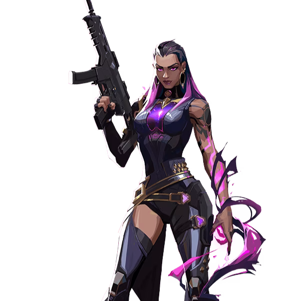

レイナ

国籍: メキシコ
ロール: デュエリスト
Reynaは敵を倒すことで能力を強化し、自己回復や無敵状態になることができます。彼女のアビリティは、敵を排除し続けることで真価を発揮します。
公式トレーラー
※レイナのトレーラーが存在しないためレイナがメインで出演しているトレーラーを記載しています
スキル
| スキル名 | 値段 | 所持上限 | 説明 |
|---|---|---|---|
| リーア (C) | 200 | 2個 | 敵の視界を遮るオーブを放ち、命中した敵の視界を奪います。 |
| ディスミス (Q) | 無料 | 無限 | 敵を倒すことで獲得できるソウルオーブを使用し、一時的に無敵状態になります。 |
| デバウア (E) | 無料 | 無限 | 敵を倒すことで獲得できるソウルオーブを使用し、一時的に体力を回復します。 |
| エムプレス (X) - アルティメット | - | 1個 | 強化状態になり、攻撃速度が上昇し、全てのキルが体力を回復します。 |
立ち回りとおすすめマップ
攻めの立ち回り
Reynaは敵を倒すことで能力が強化されるため、積極的に敵を排除していくプレイスタイルが求められます。リーアを使用して敵の視界を奪い、エントリーをサポートします。
守りの立ち回り
Reynaは1対1の状況で強力な能力を発揮します。守りでは、敵の進行を抑えるためにリーアを使用し、ディスミスやデバウアで敵を倒した後に素早く次の行動に移ります。
アルティメットの活用
エムプレスを発動することで、Reynaは短時間で大量のキルを取ることが可能になります。攻撃の起点や防衛の逆転に利用できます。